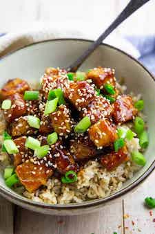

General Tso's Tofu

This General Tso's tofu is a healthier version of the traditional version. Swapping out
the chicken for tofu makes this meal vegan. Instead of deep frying, this recipe calls for
lightly sauting in a bit of oil. To make this recipe oil free, bake the tofu instead
of sauting. The addition of red pepper flakes adds a nice level of customizable
spicyness. I think you'll turn to this recipe over and over again. I know I do.
Ingredients
For the General Tso's tofu marinade
- 10 firm tofu, pressed and cubed
- 2 T tamari or soy sauce
- 1 T rice vinegar
- 6 T cornstarch, separated
- sesame oil
For the Sauce
- 3 cloves of garlic, minced
- 3 T tamari
- 3 T rice vinegar
- 3 T water
- 3 T brown sugar
- 1 T cornstarch
- red pepper flakes to taste
For serving
- Cooked rice
- Chopped green onions/li>
- Sesame seeds
Preparation
- Place the tofu in a shallow dish. Mix the marinade ingredients thorougly, reserving
2 T of the cornstarch, and pour over the tofu. Let marinate for 1/2 hour,
preferably overnight.
- Drain tofu and discard marinade. Toss the tofu with the reserved 2 T of cornstarch.
Heat oil over a medium high heat in a skillet, and saute the tofu cubes until golden
brown. Remove tofu and set aside.
- Whisk the remaining sauce ingredients in a small bowl and set aside. In the same
skillet, sautee the garlic for 30 seconds, being careful not to burn.
- Add in the sauce and whisk continuously over medium low heat until thickened. Add
in the tofu, and toss to coat. Saute for 1-2 more minutes.
- Serve over steaming bowls of rice, and top with garnishes. Store leftovers for
up to 5 days in air tight container.